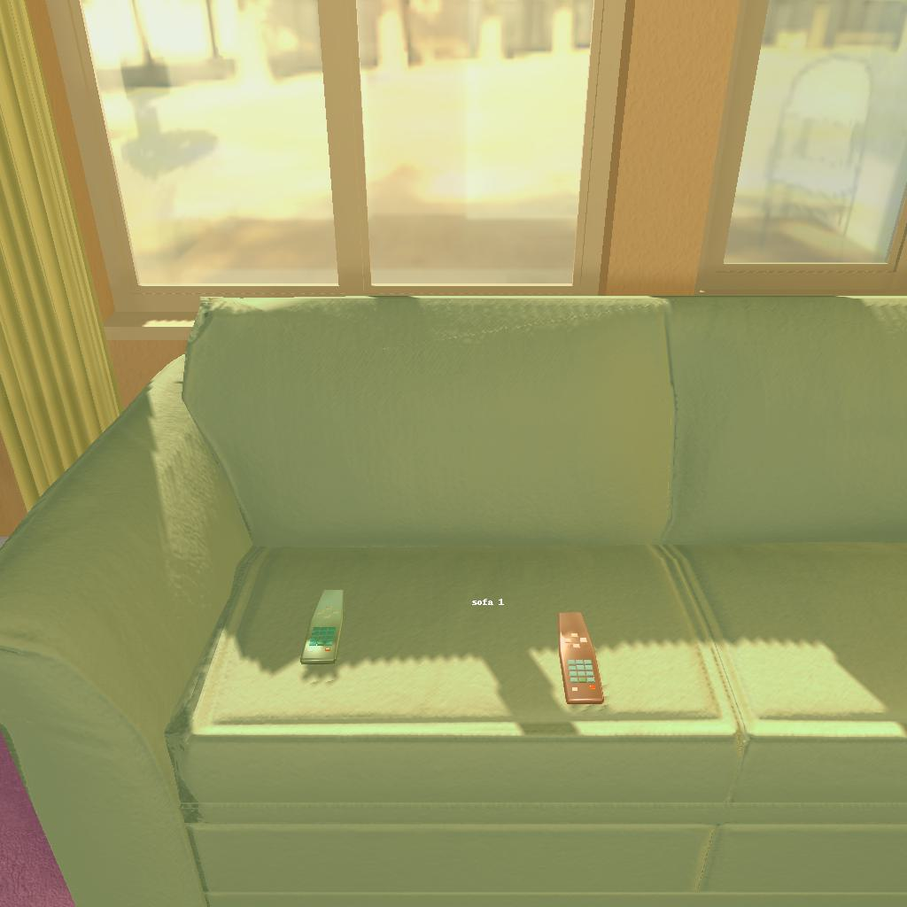

---------------------------------------------------------task: 7---------------------------------------------------------
--------------------------------------------------------------------------------------------------------------------------------------------------------------------
--------------------------------------------------------------------------------------------------------------------------------------------------------------------
Step:--------------------------------------------------------------------------0-------------------------------------------------------------------------------
----------------------------------------
VLM Prompt:
Image1:
**Instruction**
1. Analyze the provided image to identify all visible household objects, focusing on those relevant to the task description "put a creditcard in coffeetable."
2. Use the analysis of the image and the task hint "The agent must find an object of the desired type, pick it up, find the correct location to place it, and put it down there." to answer the question: what is the most reasonable action in the choices for the task description "put a creditcard in coffeetable"?
4. Decide and write the answer using the template: The answer is: (i): , where i is the real number. If there is no desired object in the image, search every place based on **Initial Observation** to find the object. And if no one is exactly correct, choose a similar answer.
**Initial Observation**
You are in the middle of a room. Looking quickly around you, you can see armchair (1-2), dresser (1), garbagecan (1), cabinet (1-4), drawer (1-4), coffeetable (1), sidetable (1), sofa (1)
**Answer Choices**
(1): go to armchair 1
(2): go to armchair 2
(3): go to dresser 1
(4): go to garbagecan 1
(5): go to cabinet 1
(6): go to drawer 1
(7): go to drawer 2
(8): go to cabinet 2
(9): go to drawer 3
(10): go to cabinet 3
(11): go to drawer 4
(12): go to cabinet 4
(13): go to coffeetable 1
(14): go to sidetable 1
(15): go to sofa 1
**Answer**
Let's think step by step by following the instructions.
----------------------------------------
----------------------------------------
Original Response:
The task is to put a credit card in the coffee table. The image shows a sofa with two phones on it, but no credit card visible. None of the household objects relevant to the task ("put a creditcard in coffeetable") are visible in the image provided.
Based on the initial observation, the agent is in the middle of a room and can see multiple objects, including a coffee table. Since the task is to put a credit card on the coffee table, the agent must first find a credit card. As the image does not show a credit card, the agent will need to search the different locations mentioned in the initial observation to find one.
Considering the potential places a credit card might be found (dresser, cabinet, drawer, etc.), it seems most likely that a credit card would be found in a drawer or possibly on a sidetable. Since there is no option to search the sidetable directly, the agent should start by searching the drawers.
The answer is: (6): go to drawer 1.
----------------------------------------
----------------------------------------
>>> Refine Original VLM Response and Get Pure Action: go to drawer 1
----------------------------------------
-----------------------------------------------------------------
Running time: 9.29689645767212 seconds
Total Money: 1.9965200000000003
-----------------------------------------------------------------
-----------------------------------------------------------------
Text Observation:You arrive at loc 5. The drawer 1 is closed.
-----------------------------------------------------------------
UNSUCCEED